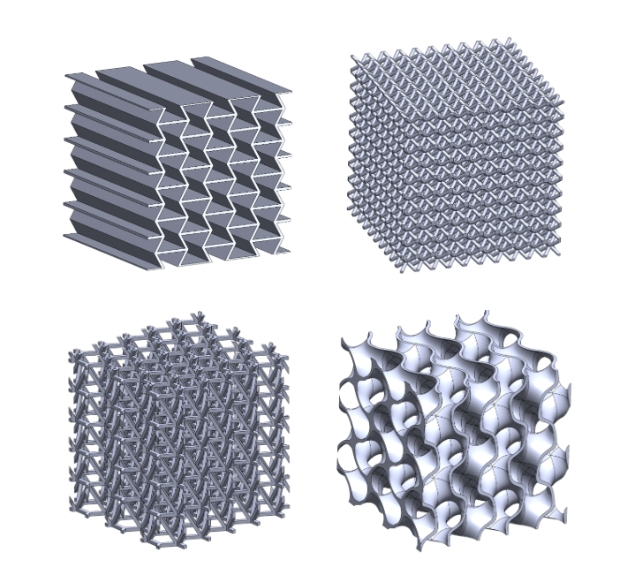
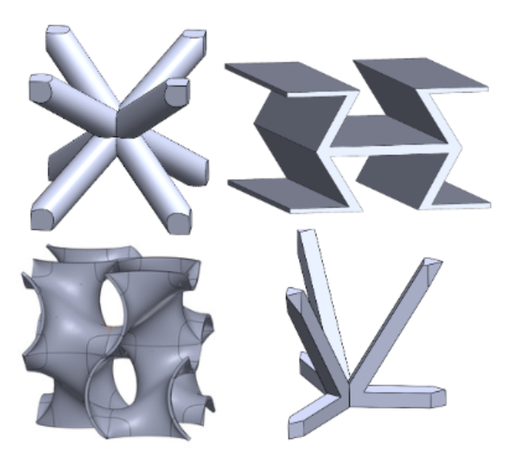
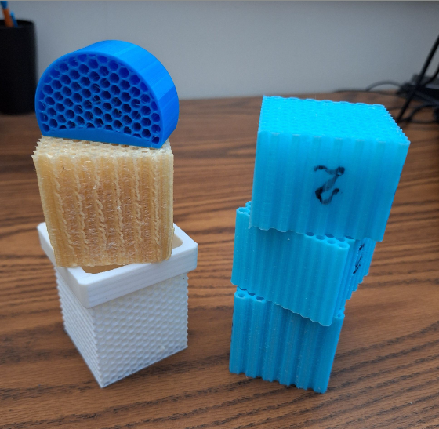
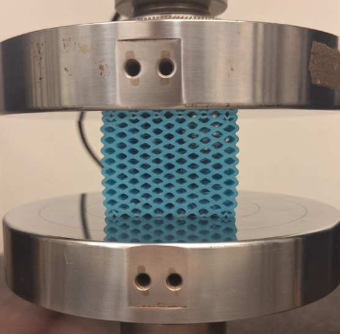
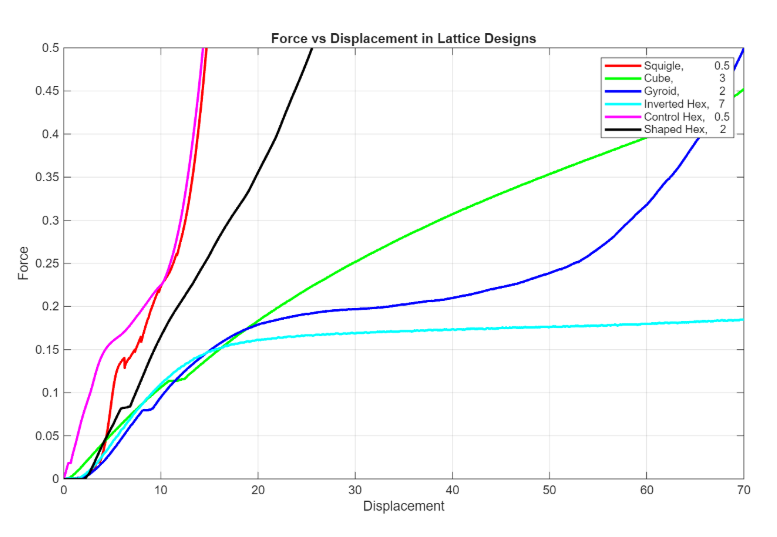
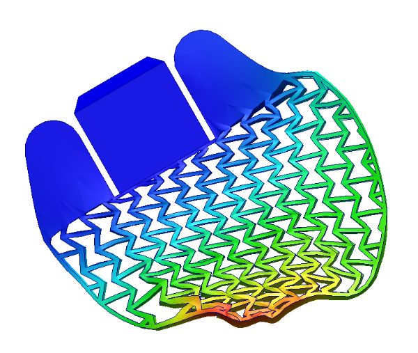
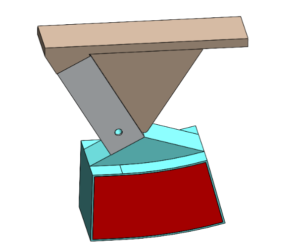

SHOCK-ABSORBING ROCKET FOOT
As part of the Georgia Tech Propulsive Landers program, this project develops TPU landing feet for the team’s 70 kg self‑landing rocket to absorb impact forces during touchdown. I led this effort alongside our vice lead, focusing the team on a material‑driven shock absorber that could deform predictably under load while staying lightweight and easy to manufacture.
We originally started with a simple honeycomb lattice, but the work quickly expanded into a broader exploration of TPU lattice families and how different geometries collapse under impact. The feet are sized specifically for the 70 kg lander configuration and mount directly to the box‑tube landing legs. The final foot design is still in progress, with full‑scale printing planned once testing and FEA validation are complete.
To tune stiffness and collapse behavior, we iterated across six TPU lattice families—Squiggle, Cube, Gyroid, Inverted Hex, Control Hex, and Shaped Hex (only four are pictured)—spanning 0.7–1.3 mm wall thicknesses and 0.5–0.75 cm cell sizes. Each variation gave us a different balance of stiffness, collapse mode, and plateau behavior.
We printed 2×2 in TPU blocks and compression‑tested them on an Instron at 0.05 cm/s, stopping each test at the onset of densification to capture the full plateau region. Non‑symmetric lattices were tested across all unique orientations so we could understand how directional collapse affected energy absorption.
I processed the force–displacement data in MATLAB, integrating the curves to compare absorbed energy. The Inverted Hex lattice consistently produced the most rectangular plateau and the strongest impact‑mitigation potential, which ultimately guided the foot geometry we moved forward with.
Once we had a lattice direction, I built a shaped foot around the Inverted Hex pattern and ran SolidWorks FEA using an 875 N worst‑case load and ±15° off‑axis compression to replicate single‑leg touchdown conditions. These simulations showed how the outer structure and lattice insert deform together under angled impacts.
The deformation patterns from FEA helped us remove mass, refine the outer shell, and finalize the internal lattice insert. The updated design is printed as two components—a red TPU lattice insert that slides into the outer foot structure—both of which are shown on the next slide.
We also built a PLA angled test mount with the lander’s box‑tube leg geometry so we can run controlled off‑axis compression tests on the Instron. That setup will define the next phase of validation and confirm how the foot behaves under real touchdown conditions.






